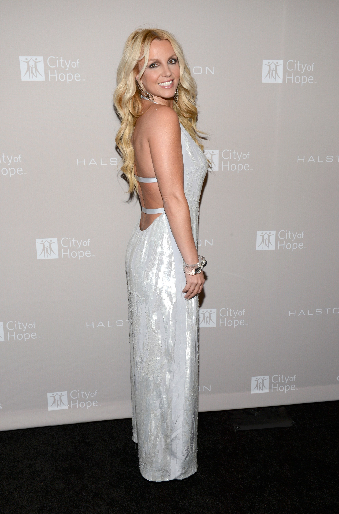

The Britney life
Britney Jean Spears (born December 2, 1981) is an American singer, dancer, and actress. Born in McComb, Mississippi, and raised in Kentwood, Louisiana, she performed acting roles in stage productions and television shows as a child before signing with Jive Records in 1997. Spears's first and second studio albums, ...Baby One More Time (1999) and Oops!... I Did It Again (2000), became international successes, with the former becoming the best-selling album by a teenage solo artist.[1] Title tracks "...Baby One More Time" and "Oops!... I Did It Again" broke international sales records. In 2001, Spears released her self-titled third studio album, Britney, and played the starring role in the film Crossroads (2002). She assumed creative control of her fourth studio album, In the Zone (2003), which yielded the worldwide success of the single "Toxic".

her success
In 2007, Spears's much-publicized personal issues sent her career into hiatus. Her fifth studio album, Blackout, was released later that year, and spawned singles such as "Gimme More" and "Piece of Me". Her erratic behavior and hospitalizations continued through the following year, at which point she was placed under a still ongoing conservatorship. Spears's sixth studio album, Circus (2008), included the international chart-topping single "Womanizer". Her seventh studio album, Femme Fatale (2011), became her first to yield three top-ten singles in the United States. She released her eighth studio album Britney Jean in 2013. Later that year, Spears began the four-year residency show, Britney: Piece of Me, at The AXIS at Planet Hollywood Resort & Casino in Las Vegas. In 2016, Spears released her ninth studio album, Glory. In 2017, she announced that her residency show would develop into a world tour, Britney: Live in Concert.
Spears is regarded as a pop icon and credited with influencing the revival of teen pop during the late 1990s. She became the best-selling teenage artist of all time and garnered honorific titles including the "Princess of Pop".[3] Her work has earned her numerous awards and accolades, including a Grammy Award, six MTV Video Music Awards including the Lifetime Achievement Award, seven Billboard Music Awards including the Millennium Award and a star on the Hollywood Walk of Fame. In 2009, Billboard ranked her as the 8th overall Artist of the Decade, and also recognized her as the best-selling female artist of the 2000s, as well as the fifth overall.[6] The Recording Industry Association of America (RIAA) lists Spears as the eighth top-selling female artist in the United States, with 34 million certified albums.She has sold over 150 million records worldwide making her one of the best-selling music artists of all time. According to Billboard Spears has sold about 22.38 million singles in digital downloads in US and is the fourth best-selling female artist since Nielsen SoundScan began
Rolling Stone recognized her instant success as one of the Top 25 Teen Idol Breakout Moments of all time,while VH1 ranked her eleventh on their "100 Greatest Women in Music" list in 2012,and Billboard named her the sexiest woman in music.[13] Forbes reported that Spears was the highest paid female musician of 2012, with earnings of $58 million, having last topped the list in 2002.
 Spears was born in McComb, Mississippi, the second child of Lynne Irene Bridges and James Parnell Spears. Her maternal grandmother, Lillian Portell, was English (born in London), and one of Spears's maternal great-great-grandfathers was Maltese.[15][16] Her siblings are Bryan James and Jamie Lynn. At age three, she started attending dance lessons in her hometown of Kentwood, Louisiana, and was selected to perform as a solo artist at the annual recital. During her childhood, she also attended gymnastics and voice lessons, and won many state-level competitions and children's talent shows. Spears made her local stage debut at age five, singing "What Child Is This?" at her kindergarten graduation. She said about her ambition as a child, "I was in my own world, [...] I found out what I'm supposed to do at an early age".
Spears was born in McComb, Mississippi, the second child of Lynne Irene Bridges and James Parnell Spears. Her maternal grandmother, Lillian Portell, was English (born in London), and one of Spears's maternal great-great-grandfathers was Maltese.[15][16] Her siblings are Bryan James and Jamie Lynn. At age three, she started attending dance lessons in her hometown of Kentwood, Louisiana, and was selected to perform as a solo artist at the annual recital. During her childhood, she also attended gymnastics and voice lessons, and won many state-level competitions and children's talent shows. Spears made her local stage debut at age five, singing "What Child Is This?" at her kindergarten graduation. She said about her ambition as a child, "I was in my own world, [...] I found out what I'm supposed to do at an early age".
At age eight, Spears and her mother Lynne traveled to Atlanta, Georgia to audition for the 1990s revival of The Mickey Mouse Club. Casting director Matt Casella rejected her as too young, but introduced her to Nancy Carson, a New York City talent agent. Carson was impressed with Spears's singing and suggested enrolling her at the Professional Performing Arts School; shortly after, Lynne and her daughters moved to a sublet apartment in New York. Spears was hired for her first professional role as the understudy for the lead role of Tina Denmark in the Off-Broadway musical Ruthless!. She also appeared as a contestant on the popular television show Star Search and was cast in a number of commercials.[21][22] In December 1992, she was cast in The Mickey Mouse Club alongside Christina Aguilera, Justin Timberlake, Ryan Gosling, and Keri Russell. After the show was canceled in 1996, she returned to Mississippi and enrolled at McComb's Parklane Academy. Although she made friends with most of her classmates, she compared the school to "the opening scene in Clueless with all the cliques. [...] I was so bored. I was the point guard on the basketball team. I had my boyfriend, and I went to homecoming and Christmas formal. But I wanted more
In June 1997, Spears was in talks with manager Lou Pearlman to join the female pop group Innosense. Lynne asked family friend and entertainment lawyer Larry Rudolph for his opinion and submitted a tape of Spears singing over a Whitney Houston karaoke song along with some pictures. Rudolph decided he wanted to pitch her to record labels, therefore she needed a professional demo. He sent Spears an unused song of Toni Braxton; she rehearsed for a week and recorded her vocals in a studio with a sound engineer. Spears traveled to New York with the demo and met with executives from four labels, returning to Kentwood the same day. Three of the labels rejected her, arguing that audiences wanted pop bands such as the Backstreet Boys and the Spice Girls, and "there wasn't going to be another Madonna, another Debbie Gibson, or another Tiffany.
After Spears returned to the United States, she embarked on a shopping mall promotional tour to promote her debut album. Her show was a four-song set and she was accompanied by two back up dancers. Her first concert tour followed, as an opening act for NSYNC.[27] Her debut studio album, ...Baby One More Time, was released on January 12, 1999.[28] It debuted at number one on the U.S. Billboard 200 and was certified two-times platinum by the Recording Industry Association of America after a month. Worldwide, the album topped the charts in fifteen countries and sold over 10 million copies in a year.[29] It became the biggest selling album ever by a teenage artist.
The title track was released as the lead single from the album. Originally, Jive Records wanted its music video to be animated; however, Spears rejected it, and suggested the final idea of a Catholic schoolgirl.[26] The single sold 500,000 copies on its first day, and peaked at number one on the Billboard Hot 100, topping the chart for two consecutive weeks. It has sold more than 10 million as of today, making it one of the best-selling singles of all time.[30][31] "...Baby One More Time" later received a Grammy nomination for Best Female Pop Vocal Performance.[32] The title track also topped the singles chart for two weeks in the United Kingdom, and became the fastest-selling single ever by a female artist, shipping over 460,000 copies.[33] It would later become the 25th-most successful song of all time in British chart history.[34] Spears is also the youngest female artist to have a million seller in the country.[35] "(You Drive Me) Crazy" was released as the third single from the album. It became a top-ten hit worldwide and propelled ...Baby One More Time to sell even more. As of today, it has sold 25 million copies worldwide, making it one of the best-selling albums of all time. It is also the best-selling first album by any artist ever.

the britney Honey
The April 1999 cover of Rolling Stone featured Spears lying on her bed, covered with a bra, shorts and an open top. The American Family Association (AFA) referred to the shoot as "a disturbing mix of childhood innocence and adult sexuality" and called to "God-loving Americans to boycott stores selling Britney's albums." Spears responded to the outcry commenting, "What's the big deal? I have strong morals. [...] I'd do it again. I thought the pictures were fine. And I was tired of being compared to Debbie Gibson and all of this bubblegum pop all the time."[37] Shortly before, Spears had announced publicly she would remain a virgin until marriage.[20] On June 28, 1999, Spears began her first headlining ...Baby One More Time Tour in North America, which was positively received by critics,[38] but generated some controversy due to her racy outfits.[39] An extension of the tour, titled Crazy 2k, followed in March 2000. Spears premiered songs from her upcoming second album during the show.

tour
Oops!... I Did It Again, her second studio album, was released in May 2000. It debuted at number one in the US, selling 1.3 million copies, breaking the SoundScan record for the highest debut sales by any solo artist.[40] The album sold over 20 million copies worldwide to date, making one of the best-selling albums of all time.[41] Rob Sheffield of Rolling Stone said that "the great thing about Oops! – under the cheese surface, Britney's demand for satisfaction is complex, fierce and downright scary, making her a true child of rock & roll tradition."[42] The album's lead single, "Oops!... I Did It Again", peaked at the top of the charts in Australia, New Zealand, the United Kingdom and many other European nations.[35][43] The album as well as the title track received Grammy nominations for Best Pop Vocal Album and Best Female Pop Vocal Performance, respectively.
Work bitch
In 2003 Spears opened the 2003 MTV Video Music Awards with Christina Aguilera, performing "Like a Virgin". Halfway through they were joined by Madonna, with whom they both kissed. The incident was highly publicized.[61] Spears released her fourth studio album, In the Zone, in November 2003. She assumed more creative control by writing and co-producing most of the material.[20] Vibe called it "A supremely confident dance record that also illustrates Spears's development as a songwriter."[68] NPR listed the album as one of "The 50 Most Important Recording of the Decade", adding that "the decade's history of impeccably crafted pop is written on her body of work."[69] In the Zone sold over 609,000 copies in the United States and debuted at the top of the charts, making Spears the first female artist in the SoundScan era to have her first four studio albums to debut at number one.[20] It also debuted at the top of the charts in France and the top ten in Belgium, Denmark, Sweden and the Netherlands.[70] In the Zone sold over 10 million copies worldwide.[71] The album produced the hit singles: "Me Against the Music", a collaboration with Madonna; "Toxic"—which won Spears her only Grammy for Best Dance Recording; "Everytime" and "Outrageous"..
Queens
QIn January 2004, Spears married childhood friend Jason Allen Alexander at A Little White Wedding Chapel in Las Vegas, Nevada. The marriage was annulled 55 hours later, following a petition to the court that stated that Spears "lacked understanding of her actions".[72] In March 2004, she embarked on The Onyx Hotel Tour in support of In the Zone.[73] In June 2004, Spears fell and injured her left knee during the music video shoot for "Outrageous". Spears underwent arthroscopic surgery. She was forced to remain six weeks with a thigh brace, followed by eight to twelve weeks of rehabilitation, which caused The Onyx Hotel Tour to be canceled.[74] During 2004, Spears became involved in the Kabbalah Centre through her friendship with Madonna..